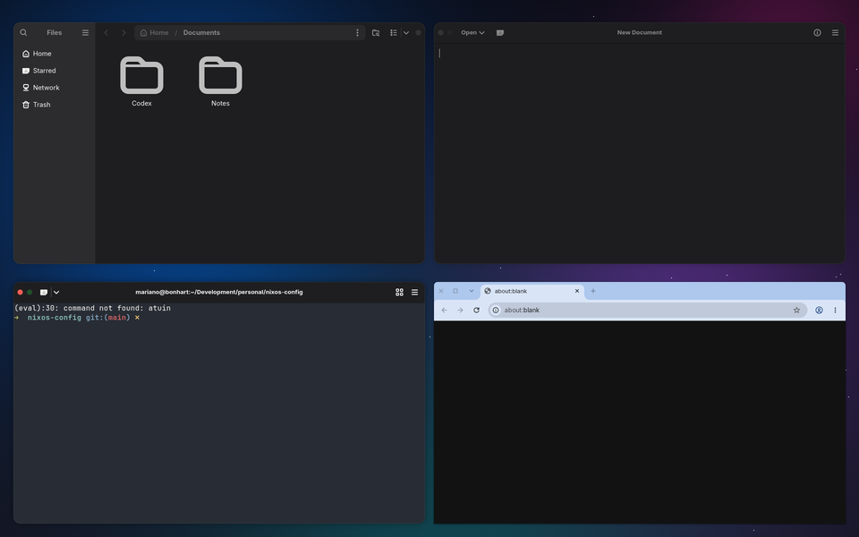
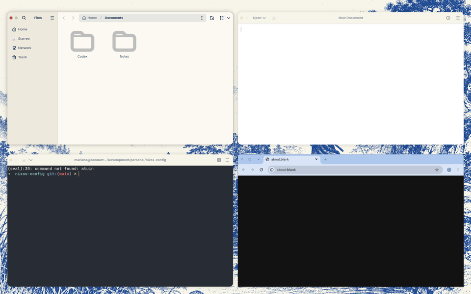
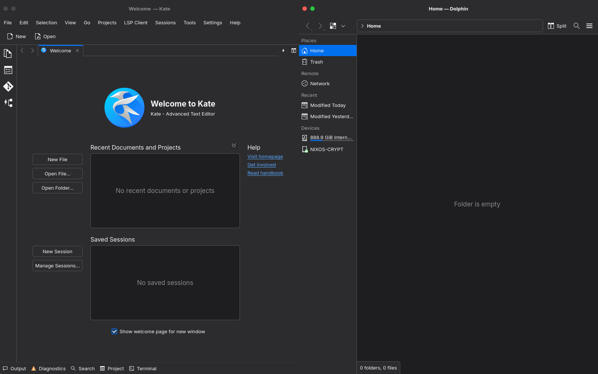

Title bars with two lights
Captured from real apps (Files, Text Editor, Ghostty, Chrome) with a prototype of themeport's GTK CSS: the window's controls at the start of the title bar, close and maximize (niri has no minimize), glyphs on hover, quiet when the window is not focused. Each theme dresses them: Lumen in red and green, Folio in its own muted red and green.
Lumen, dark
Ghostty is focused (top left: red and green). Files and Text Editor are not (grey). Chrome moved its buttons to the left too, but draws its own ✕ and □.

Folio, light
Files is focused: Folio's red and green on paper. (The green reads pale here because the test compositor disables maximize on floating windows; niri allows it.)

Qt apps
Dolphin is focused, Kate is not: Interstellar's own Qt title bar (a QtWayland decoration plugin), in the test compositor. The lights are the GTK apps' (themeport's palette, 12 px, 9 px apart, 46 px bar); the bar takes the Qt apps' window color from kdeglobals, so it runs into their toolbars. A theme switch recolors open bars without restarting the app.

Who gets the lights
| Apps | Result | What it takes |
|---|---|---|
| GTK and GNOME apps (Files, Text Editor, Calculator, Loupe…) | Lights, identical in every app | themeport's GTK CSS and one setting (button order) |
| Ghostty | Lights | Its own title bar back on (today niri's no-CSD preference leaves it bare) |
| Chrome | Buttons on the left, but its own ✕ □ | Untested way to lights: drop the color policy and use Chrome's GTK theme |
| Qt apps (Dolphin, Kate, qBittorrent, OBS) | Lights, the same as GTK's | Our own Qt decoration plugin (packages/qt-interstellar-decorations), and niri's no-CSD preference off |
| VS Code, Obsidian, Slack, Spotify | Their own controls | Per-app settings, where they exist |